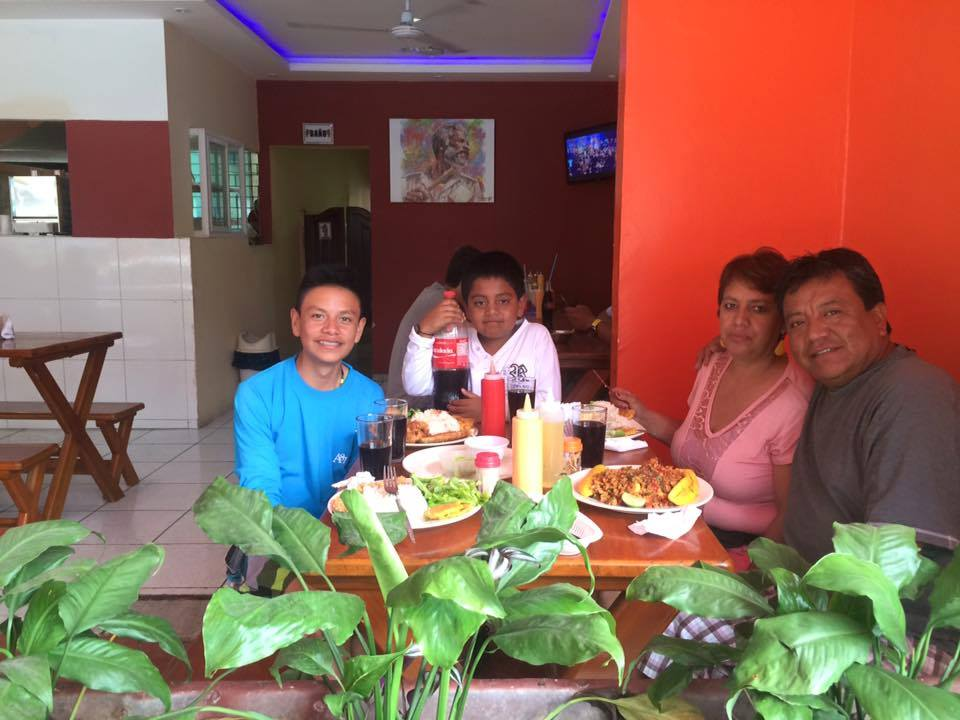
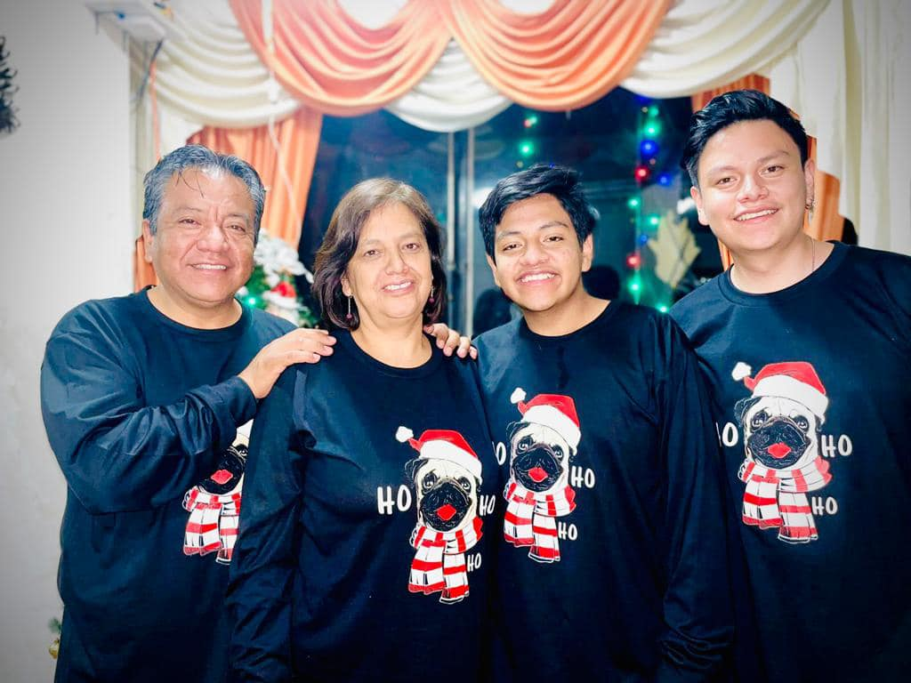
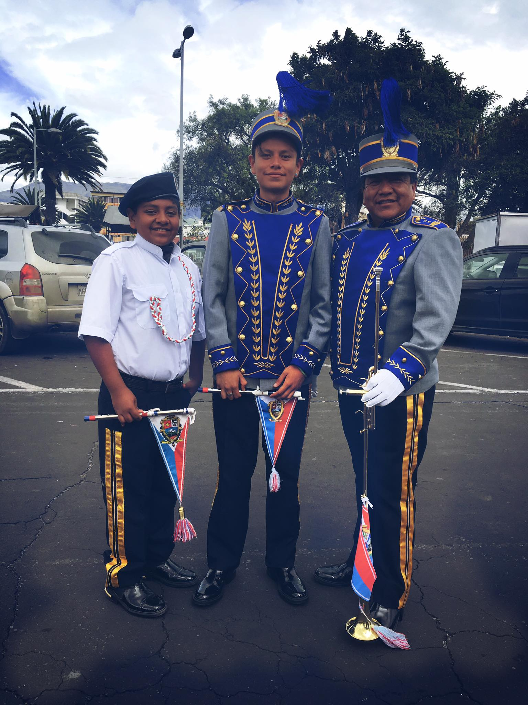

El en año 2000 en la Clínica Metropolinato de la ciudad de Riobamba, el día jueves 07 de Abril a las 10h00 de la mañana nace Andrés, el por que de los nombres es que, Roberto (padre); Sandra (Madre) vienen de padres religiosos y escogen los dos nombres "Andrés" y "Mateo" por los apostoles de Jesus.

El primer hombre nieto de la familia Zabala ya que anteriormente solo nacieron dos nietas mujeres.
Desde muy pequeño le gustaba el deporte en especial el futbol que tiempo después comenzaría a jugar en equipos muy reconocidos como son el Centro Deportivo Olmedo y el Star Club.
Comenzaría sus primers estudios en "Mis primeros amigos", y después de eso lo realizaría en al Unidad Educativa Fiscomisional Santo Tomas Apostol de Riobamba".

Ingresa a la Salesianos, por la familia Morales, que llevaría cuatro generación realizando sus estudios en el colegio; desde el visabuelito, abuelito, padre, tios y primos.
Al entrar al colegió conoce a varios amigos que representarían un gran aporte en la vida de Andrés.
En septimo de básica escucha por primera vez la Banda de Guerra del Salesianos y decidí comenzar su camino en la prestigiosa banda, escoge el primer bloque como son los flautines y al pasar de los años y las presentaciónes es designado como Sub- Brigadier de la banda de Guerra en su ultimo año lectivo.

La banda de Guerra fue la mayor experiencia y lo que más se recuerda del Colegio.
Al salir como representante de la banda de Guerra decidí innovar y saca chompas personalizada de la Banda, con ayuda del rector y suporvisor del Colegio.
Con el apoyo de los padres hermano y familia, decidí estudiar Pedagogía de las Ciencias Experimentales: Informática como su nivel Universitario, esto le llevaría a tomar ya su decisión por el resto de la vida.
Ahora se encuentra ya por finalizar sus estudios y con la mano de Dios, San Juan Bosco y Maria Auxiliadora en un futuro desea construir una familia estable, emocional y económicamente.